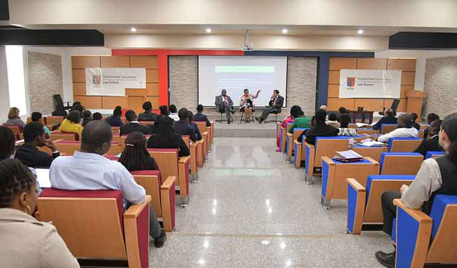

Strathmore College was started in 1961 as an Advanced-level Sixth Form College offering Science and Arts subjects by a group of professionals, who formed a charitable Educational Trust (now the Strathmore Educational Trust). Strathmore College was the first in Pre-independence Kenya to accommodate all races, religions, and social standing. Saint Josemaría Escrivá, the founder of Opus Dei, inspired and encouraged them to start the College. In March 1966, the first intake of Accountancy students, twenty-five in number, joined the Sixth Form students and began preparing for the examinations of the UK-based Association of Chartered Certified Accountants (ACCA). These first Accountancy students were sponsored by Shell East Africa, BAT (East Africa), and the East African Breweries. At this time Strathmore College was unique as a fully integrated post-Form 4 institution offering both academic and professional courses.
